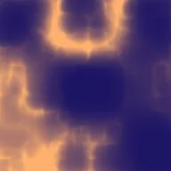

Fractale ribbels

Vult de dekkende delen van de laag met scherpe, turbulente ribbels van fractale ruis.
Instellingen
| Instelling | Type | Bereik | Standaard |
|---|---|---|---|
| Verschuiving | Punt (X, Y) | -5000 px tot 5000 px | 0 px, 0 px |
| Parallax | Punt (X, Y) | -5000 px tot 5000 px | 0 px, 0 px |
| Evolutie | Getal | -50 tot 50 | 0 |
| Schaal | Getal | 0.01 tot 50 | 1 |
| Uitrekken | Punt (X, Y) | 0.01 tot 10 | 1, 1 |
| Intensiteit | Getal | 0.1 tot 3 | 1 |
| Seed | Getal | 0 tot 5 | 0 |
| Kleur 1 | Kleur | – | #000000 |
| Kleur 2 | Kleur | – | #FFFFFF |
| Alfa | Getal | 0% tot 100% | 100% |
| Octaven | Getal | 1 tot 9 | 6 |
| Stijl | Keuze | Klassiek, Standaard | Klassiek |